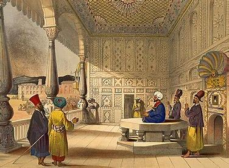
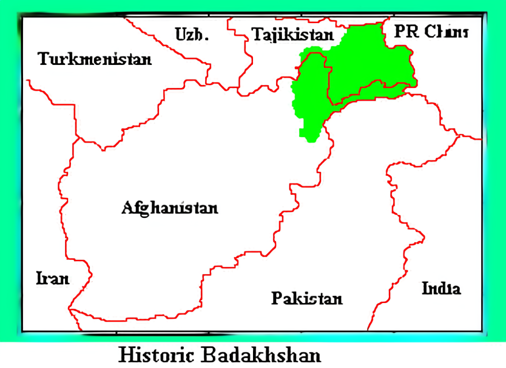
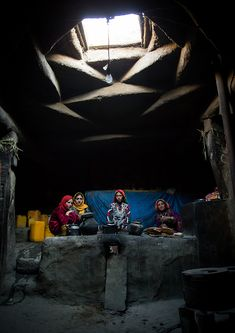

The Pamir region has a long and rich history, dating back more than 2,500 years. The strategic location of the Pamir Mountains made it a key region along the ancient Silk Road, connecting the East and the West.
The earliest inhabitants of the Pamir region were pastoralists and agricultural communities who cultivated the land and traded goods with travelers passing through the Silk Road.
The Pamirs were an essential corridor for trade between China, Persia, and Europe during the time of the Silk Road. The region played a significant role in cultural exchanges and the spread of religions like Buddhism and Islam.
Today, Pamir remains a remote but vibrant region, rich in tradition and culture. The people of Pamir have maintained their distinct identity, blending ancient practices with modern life.

Ancient Zoroastrizm building
Ancient chaliphate ruling
Today's Badakhshan
Ancient Pamiri Home- Current
Zoroastrianism is an ancient pre-Islamic religion of Iran, founded by the prophet Zarathushtra (Zoroaster). It is both monotheistic and dualistic, worshiping Ahura Mazda, the supreme god, while also recognizing the struggle between good and evil. Human beings are viewed as having free will to choose between these forces, and the ultimate victory of good is assured. Ritual purity and avoiding defilement are central practices, and the religion is optimistic about the triumph of good.
...Historically, Zoroastrianism influenced other major religions, including Judaism, Christianity, and Islam. It originated in eastern Iran, likely before 600 BCE. During the Achaemenid Empire, rulers like Darius I promoted Ahura Mazda's worship. However, the religion was marginalized during Alexander the Great's conquest and revived under the Sasanian dynasty. With the advent of Islam, Zoroastrianism declined in Iran, but it survived among the Parsis in India.
Zoroastrian theology features dualism, with the Bounteous Spirit (Spenta Mainyu) representing good and Angra Mainyu (Ahriman) representing evil. Cosmogonically, the universe was created as a battleground for this struggle, with Ahura Mazda ultimately triumphing after a 9,000-year cycle. Human beings play a role in this cosmic battle through ethical choices and must maintain life, procreate, and combat evil forces.
Zoroastrians hold five daily prayers and venerate fire as a symbol of purity. The dead are exposed in "Towers of Silence" (dakhmas) for excarnation, avoiding contamination of earth or fire. Major festivals like Nōrūz celebrate renewal and the fight against evil.
Ethically, Zoroastrianism stresses truth, purity, and maintaining life, especially through agriculture and cattle rearing. The final judgment after death evaluates one’s actions, thoughts, and words, with consequences in either paradise or hell.